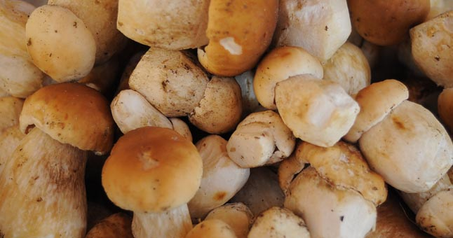

Valgomi grybai
 GRYBAI.LT MENIU Grybai › Valgomi grybaiValgomi grybai
Lietuvos valgomų grybų katalogas. Valgomi grybai yra malonaus aromato ir skonio grybai, vartojami švieži, džiovinti, marinuoti, šaldyti, rūkyti ar kitokiu būdu paruošti maistui, nereti.
1 2 3 4 5 6 7 8 9 10 11 12 13 14 15 » Valgomi Menkaverčiai Pasidalink:AITRUSIS PIENGRYBIS
Valgomi Menkaverčiai Pasidalink:ALEKSANDRO TAURIABUDĖ
Valgomi Pasidalink:AMETISTINĖ LAKABUDĖ
Valgomi Menkaverčiai Pasidalink:AUKSAKOTIS AKSOMBARAVYKIS
Valgomi Menkaverčiai Pasidalink:AUKSAVIRŠĖ SKUJAGALVĖ
Valgomi Vertingi Pasidalink:AUKSAVIRŠĖ ŪMĖDĖ
Valgomi Vertingi Pasidalink:AUKSIŠKOJI ŪMĖDĖ
Valgomi Menkaverčiai Pasidalink:AUKSUOTOJI SMULKIAŽVYNĖ
Valgomi Menkaverčiai Pasidalink:AVINĖ DIRVAPINTĖ
Valgomi Menkaverčiai Pasidalink:ĄŽUOLINĖ KEPENA
Valgomi Vertingi Pasidalink:ĄŽUOLYNINIS RAUDONVIRŠIS
Valgomi Vertingi Pasidalink:BALTAGAURIS PIENGRYBIS
Valgomi Menkaverčiai Pasidalink:BALTASIS BALS VIS
Valgomi Labai vertingi! Pasidalink:BARAVYKAS
Valgomi Menkaverčiai Pasidalink:BARAVYKAS PAĄŽUOLIS
Valgomi Menkaverčiai Pasidalink:BARZDOTASIS BALTIKAS
1 2 3 4 5 6 7 8 9 10 11 12 13 14 15 »GRYBAI pagal ABĖCĖLĘ:
A Ą B C Č D E Ę Ė F G H I Į Y J K L M N O P R S Š T U Ų Ū V Z Ž
GRYBAI pagal tipus Valgomi (239) Nevalgomi! (168) Nuodingi!!! (51) Kiti (15) GRYBAI pagal grupes Afiloforiečiai (67) Agarikoidiniai (345) Ausūniečiai (33) Gasteromicetai (17) Gleivūnai (5) Žiūrytiečiai (6) Grybautojų radybos (10) APIE GRYBUS Grybų karalija Grybų klasifikacija Grybų sandara ir ypatybės Grybų mitybos grupės Maistinė vertė Maistinės vertės samprata Nuodingieji grybai Haliucinogeniniai grybai ĮDOMU Raganų ratilai Kur, kada ir kaip grybauti Keletas patarimų šeimininkei Juodasis beržo grybas - Čaga Gydomosios savybės Trobagrybio išdaigos Grybų draugai ir priešai Informacinis filmukas Operatorius Kipsas grybų šalyje Video - Grybų ABC ▲